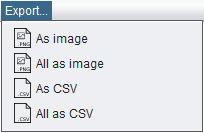

After exploring your data, you would usually want to use the results in other software applications, or you would just want to save them for further queries. To do so, LA-iMageS allows you to export the element data in two different formats: as CSV files or as PNG images.

The Export menu